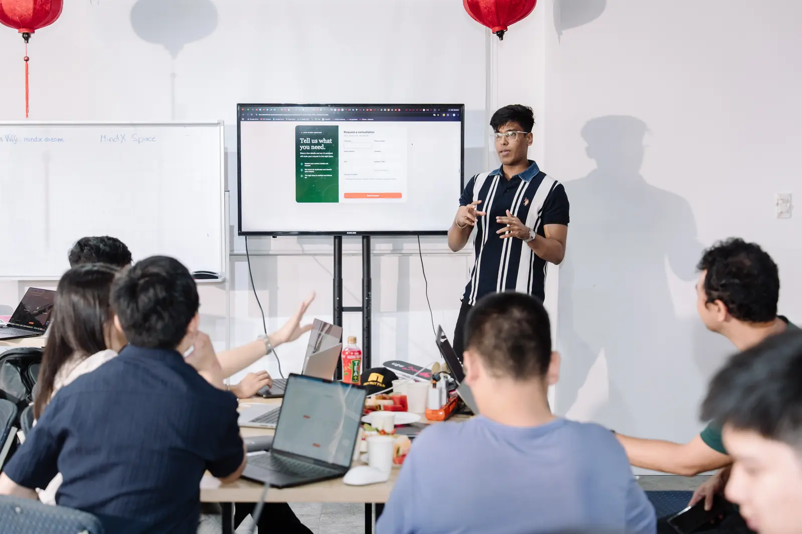

AI automation engineer & founding engineer
I build  About me ↗that do the work.
About me ↗that do the work.
From the first workflow to the product around it.
Built for real teams. Built to run.
I turn the slow, manual parts of a business into systems that take care of themselves.
Most of my work is for Fortune 500 teams: AI agents and end-to-end automation wired into the tools those teams already use.
As Founding Engineer at TrueHorizon AI ↗, I build the infrastructure, the client systems and the product around them.
AI agents in production
End-to-end systems deployed
ARR at TrueHorizon AIHelped scale it as Founding Engineer
Selected work.
Four systems from my work in sales, finance and operations.
A lead. A conversation.
A real connection.
 New lead
New lead Qualify
Qualify- Follow up
 CRM sync
CRM sync
Revenue Automation
From a new lead to a qualified, synced CRM record.
Better calls.
Better coaching.
- Call arrives
- Score rubric
 Store scores
Store scores- Coach team
Process Automation
Call recordings become consistent coaching signals.
From a pile of files
to useful data.
- Invoice
- Extract fields
 Validate
Validate- Write record
Document Intelligence
Invoice data, extracted, validated and written to the database.
Read. Retrieve.
Reason. Prepare.
 Read files
Read files Retrieve
Retrieve- Reason
- Application
Financial Intelligence
Unstructured financial documents become a loan application.
Illustrated system architectures. No client data is shown.
What I’ve been
building.
Early 2025 to presentFounding EngineerTrueHorizon AI
One of the first members of the team. Built the core automation infrastructure that enterprise client delivery runs on, and the repeatable frameworks behind it.
Architecture · Client delivery · Repeatable frameworks
$2.5M ARR Helped scale the company
Now in active developmentAI EngineerTHAI UI · TrueHorizon AI
Designing the AI agents, skills and workflow automation inside THAI UI, TrueHorizon AI's AI agent platform, and developing the product around them myself: the Vue interface and the Node and MongoDB services underneath. Built with Claude Code and Codex.
AI agents · Workflow automation · Product development
End to end From agent logic to the product UI
Guest engagementGuest ConsultantFortune 500 off-site
Brought in to show GTM leaders a practical path to AI adoption across their teams.
GTM leadership · AI adoption · Practical implementation
Fortune 500 Host of the off-site
Ongoing co-founded ventureCo-founderQixazow
Writing, consulting and video on n8n, Claude and business AI, with two fellow AI professionals.
Publication · Consulting · Video
Live venture Publication and consultancy
19 Sep 2026 Ho Chi Minh CitySpeakern8n Builders Challenge
Demoed live n8n workflows to the whole room, then spent the build hours helping teams with their builds.
Live demos · Workflow design · Build hours
Big-screen demos Then build hours with the teams
Since collegeAI Automation EngineerIndependent
Automation systems for finance, e-commerce and enterprise sales teams, starting with real client work delivered alongside coursework.
Finance · E-commerce · Enterprise sales
First client Paid, before graduating
And sometimes,
I build with a room.

n8n Builders Challenge
Ho Chi Minh City · 19 September 2026
Live workflow demos on the big screen, followed by hands-on build hours with the teams.
I’ve also been a guest consultant at a Fortune 500 off-site, helping GTM leaders put AI into practice.
Where I can help.
Thinking out loud.
What holds up in production, and what I learn along the way.
Claude Design for Enterprises: 6 Things to Know Before You Prototype
AI Agents5 min readThe AI Agent That Does YouTube Research While You Sleep
Automation5 min readStop Prototyping Slowly: n8n MCP + Claude Code
All thoughtsLet's put AI
to work.
I'm available for projects, consulting engagements and speaking opportunities. Tell me what you're working on.
sales@deepankar.xyzBhopal, India · Available globally
LinkedIn